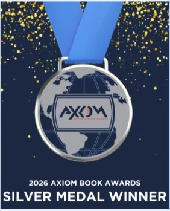

{{ t.eyebrow }}
Marylene
Delbourg-Delphis
{{ t.heroPre }}{{ t.heroEm }}{{ t.heroPost }}
{{ t.heroSub }}

{{ t.photoCredit }}
{{ r.l }}
{{ r.s }}

{{ t.axiomKicker }}{{ t.axiomTitle }}{{ t.axiomText }}
{{ t.praiseKicker }}
I
“{{ q.quote }}”
{{ q.book }}
“{{ q.quote }}”
{{ t.booksKicker }}
II
{{ t.booksTitle }}
{{ t.aboutKicker }}
III
{{ t.aboutLead }}
{{ f.n }}
{{ f.l }}

“{{ t.whyQuote }}”
{{ t.whyQuoteSrc }}
{{ t.whyKicker }}
{{ t.whyTitle }}
{{ w.n }}
{{ w.h }}
{{ w.p }}
{{ t.speakKicker }}
IV
{{ t.speakTitle }}
{{ t.blogKicker }}
V
{{ t.blogText }}
{{ t.blogCta }} ↗{{ t.contactLoc }}
{{ t.contactTitle }}
{{ t.contactSub }}